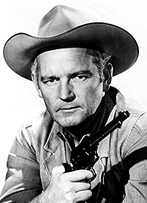

Meine Filme
Darsteller Terry Wilson 

| 7747 | Draußen wartet der Tod | 1955 | 12 | 97 | 1080p | 6.6 / 10 | Western | |
| 1706 | Gewaltigen, Die | 1967 | 16 | 96 | 1080p | 6.9 / 10 | Western | |
| 9524 | Latigo | 1971 | 16 | 92 | 1080p | 6.9 / 10 | Komödie | |
| 1099 | Schwarze Falke, Der | 1956 | 12 | 119 | 1080p | 8.0 / 10  | Abenteuer | |
988  | Westworld | 1973 | 16 | 88 | 1080p | 7.0 / 10 | Action |